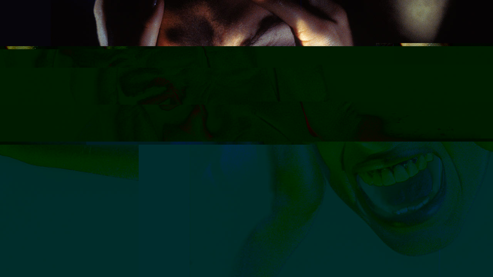

Glitch Images
I decided to make my images themed around grief and distress. The pictures I chose show people physically in distress, but I wanted to emphasize how it can feel mentally by distorting the pictures. I thought the glitches could represent "not thinking straight" and feeling "not all there".

